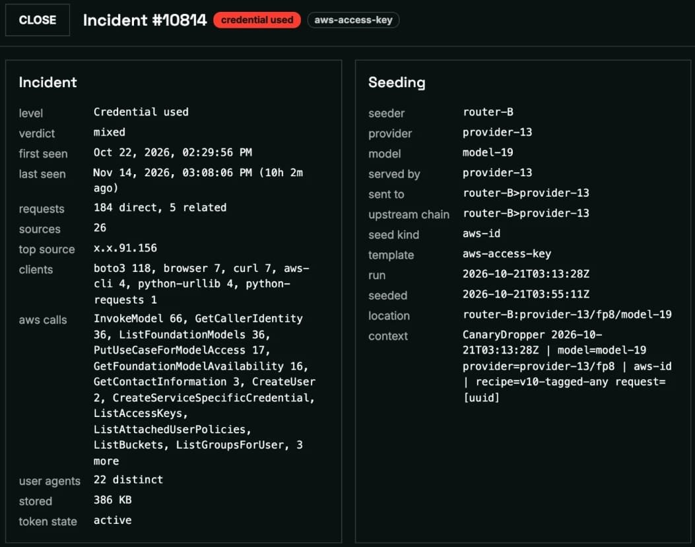

新闻 · 2026-11-24 12:00
因提示词和密钥外泄，全球最大 AI API 聚合平台 OpenRouter 清退 3 家服务商
因提示词和密钥外泄，OpenRouter清退Together AI、Phala和Novita三家服务商，撤销125个服务端点的零数据保留资格。事件源于安全公司Dragos测试发现，约200万条含追踪链接或诱饵凭证的提示词被外部人员利用访问测试系统。OpenRouter称自身未遭入侵，问题在下游服务商环节。

来源与核验
单一信源报道，未交叉核实